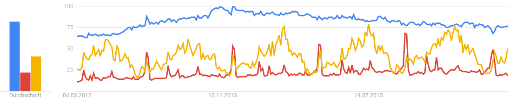
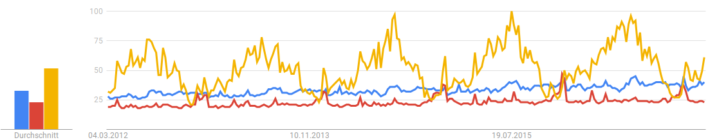
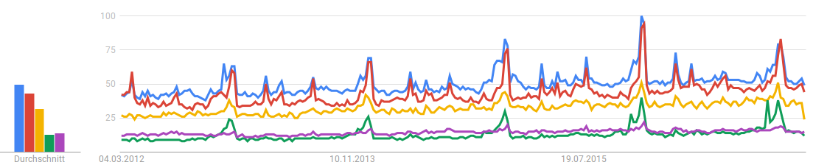
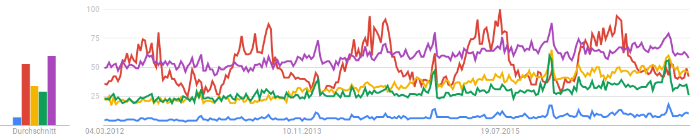
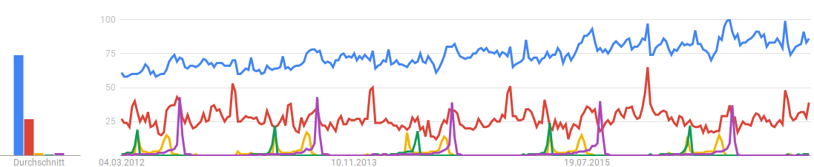

Häufige Google Suchbegriffe in der Schweiz (Februar 2017)
Drei häufige Suchbegriffe sind: Wetter, Öffnungszeiten und Google:

Nach Wetter wird in den letzten Juli Wochen am häufigsten gesucht.
Die Öffnungszeiten erreichen ihr Peak in den Festtagen am Ende des Jahres. Weitere Peaks sind an Ostern, Pfingsten und am Nationalfeiertag: dem 1. August.
Google wird über das Jahr immer etwa gleichhäufig gegoogelt. Es nimmt aber in der Wichtigkeit seit Anfang 2014 ab.
Weitere häufige Suchbegriffe sind Restaurant und Migros. Um sie in Relation zur vorherigen Grafik stellen zu können, zeigt die folgende Grafik
auch noch das Wetter an:

Die Migros hat (wenigstens zur Zeit noch) gegenüber
Coop die Nase vorn.
Im Vergleich zeigt die Grafik auch die Suchhäufigkeit von Post,
Manor und Aldi:

Interessanterweise wird während eines Jahres viel konstanter nach Aldi wie nach Manor gesucht.
Hier werden Volg, Landi, Lidl, Denner und Aldi verglichen:

Schön zu sehen, wie Lidl, zumindest in der Suchhäufigkeit, in den Jahren 2015-216 von 25% auf 50% aufholt.
Die Ausschläge des Denners am Jahresende werden gegen Jahresende zunehmend stärker.
Nach dem Landi wird offenbar häufig im Sommer gesucht.
Vergleich von Restaurant, Kino, jazz montreux, Sechseläuten und Street Parade:

Eindrücklich ist hier, wie die Suchbegriffe jazz montreux, Sechseläuten und Street Parade während des Jahres peaken.